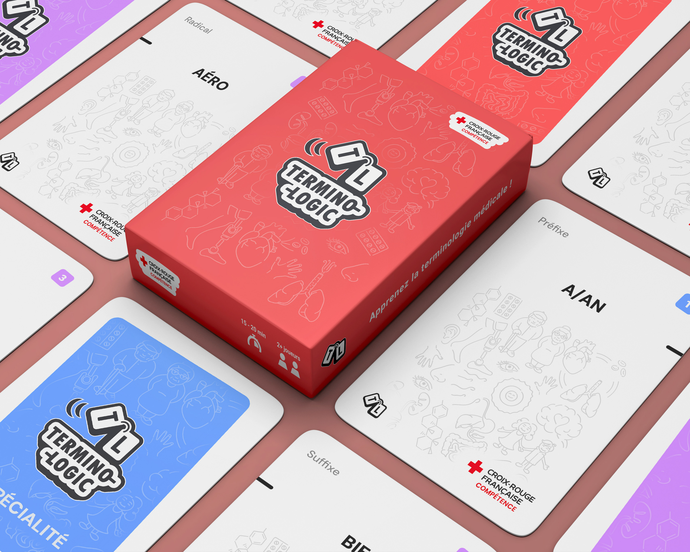

J'ai été contacté par la Croix-Rouge Compétence pour concevoir divers supports destinés à leurs apprenants. Le projet phare fut un jeu de société complet de 778 cartes, conçu pour faciliter l'apprentissage de la terminologie médicale. J'y ai travaillé en étroite collaboration avec Céline Bauwens, designer pédagogique de la structure, et son équipe pédagogique, en prenant en charge l'identité visuelle, la structuration du contenu et la mise en page du livret de règles.

Le Jeu de cartes
Ce projet a représenté un défi à plusieurs égards : créer une charte graphique personnalisée tout en restant une déclinaison de la charte globale de la Croix-Rouge, concevoir les règles de A à Z (plusieurs salves d'impressions et d'ajustements), et gérer un volume de contenu important — 778 cartes générées à partir d'un tri lexical conséquent et de scripts d'automatisation.
1. Le Nom
Trouver le titre du jeu a été un exercice à part entière : il devait rester ludique, mémorable, et évoquer clairement son objectif pédagogique. Plusieurs pistes ont été proposées avec Céline, puis soumises à l'équipe pédagogique qui a tranché sur "Termino-Logic".
2. Le logo
Pièce centrale du jeu, le logo a fait l'objet d'une réflexion approfondie. Il devait être modulable pour apparaître à la fois dans sa forme pleine et en icône réduite, rester proche de la charte Croix-Rouge tout en gardant un aspect ludique et attrayant.
Les couleurs dominantes de la Croix-Rouge — blanc sur fond rouge — ont été conservées pour inscrire le jeu dans la continuité de l'association. Le côté ludique passe donc par la forme : un contour épais, un ombrage généreux, des courbes très arrondies pour sortir du cadre sérieux de l'apprentissage. Le logo représente deux cartes liées entre elles, en mouvement, pour évoquer le dynamisme recherché.

3. Les pictogrammes
Une trame de pictogrammes semi-transparents, reprenant les spécialités médicales du jeu, vient égayer les fonds unis et renforcer l'ambiance "jeu de société". J'ai conçu une banque d'illustrations dans le même style, également utilisée dans d'autres supports pédagogiques du CRCNA.


4. Les cartes
Au-delà de l'aspect graphique, les cartes sont l'outil de jeu : leur design devait servir le gameplay. C'est le support qui a le plus évolué au fil du projet, avec plusieurs salves d'impressions et de tests aux côtés de Céline — vérifier la lisibilité du texte, ajuster l'opacité de la trame graphique sur papier — avant de trouver leur forme définitive.
Les joueurs tenant leurs cartes à la verticale en main, ce format s'est imposé naturellement. Chaque carte affiche trois informations : le mot, en gros caractères centrés en partie haute pour rester visible même quand les cartes se superposent en main ; le type et les points, plus petits, dans les coins supérieurs — les emplacements les plus visibles pour le joueur ; les informations secondaires dans les coins inférieurs. La trame illustrée, à faible opacité, occupe l'espace vide sans capter l'attention.

5. Le lexique
Avant de dessiner les cartes, il fallait construire leur contenu. Le jeu repose sur les morphèmes du vocabulaire médical (préfixes, radicaux, suffixes). À partir de lexiques transmis par l'équipe pédagogique, j'ai découpé plusieurs centaines de mots pour en extraire les composantes puis calculé pour chacune son taux d'apparition et sa facilité d'association avec d'autres composantes.Ces données m'ont permis de répartir les cartes en deux catégories — communes et rares — et d'ajuster le nombre d'exemplaires ainsi que la valeur de chaque carte en fonction de son taux d'apparition réel. J'ai ensuite conçu des scripts Excel pour automatiser l'export des listes de mots et de points au format adapté à la fusion de données
6. Le livret
Le livret de règles a demandé un travail éditorial à part entière : chapitrage clair, mise en page aérée, rédaction pensée pour rendre une information dense facilement digeste. Il s'est appuyé sur les automatisations InDesign — styles, styles GREP, options d'enchaînement, pagination et sommaire automatiques, ancrages — pour gérer un document long tout en gardant une cohérence graphique totale avec le reste du jeu.


Autres supports
En parallèle, j'ai réalisé les livrets de sécurité et plans d'évacuation de l'ensemble des sites de la Croix-Rouge Compétence Nouvelle-Aquitaine, ainsi que des pictogrammes, supports pédagogiques et logigrammes divers.
Ce projet a été réalisé pour la Croix-Rouge Compétence Nouvelle-Aquitaine, dans le cadre d'un stage puis d'une mission freelance, en collaboration avec l'équipe interne de la structure. Les visuels présentés ici sont montrés à titre de démonstration de mon travail de conception graphique ; leur exploitation reste exclusive à la Croix-Rouge Compétence Nouvelle-Aquitaine. Merci de ne pas les réutiliser sans autorisation. Le nom "Termino-Logic" est une marque déposée à l'INPI par la Croix-Rouge Compétence Nouvelle-Aquitaine. Toute reproduction ou utilisation du jeu, de son nom ou de ses éléments visuels sans autorisation expose à des poursuites de la part de son titulaire.